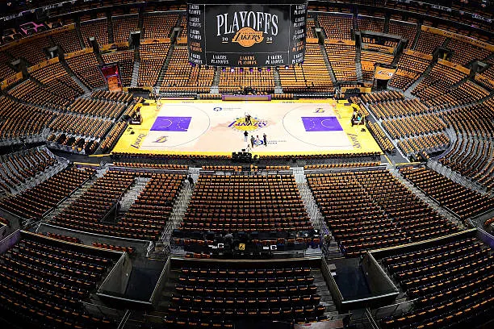

A logó
A ligát New Yorkban alapították 1946. június 6-án Basketball Association of America (Amerikai Kosárlabda Szövetség) néven. Jelenlegi nevét a rivális National Basketball League-gel (Nemzeti Kosárlabda Liga) való egyesülés után kapta. A liga nemzetközi és belső hivatalait a New York-i központból irányítják. Az NBA a USA Basketball (USAB) tagja, amelyet elismer a FIBA, mint az Egyesült Államok kosárlabda-szövetsége.
Az NBA egy-egy idénye két részből áll, az alapszakaszból és a rájátszásból. Az alapszakaszban minden csapat 82 mérkőzést játszik, mindkét főcsoportból automatikusan hat, összesen nyolc csapat jut a rájátszásba.
A stadionok
A legnagyobb stadion a United Center (Chicago, 20 917 fős), a legkisebb a Smoothie King Center (New Orleans, 16 867 fős). A legrégebbi a Madison Square Garden (1968), a legújabb pedig a 2024-ben nyílt Intuit Dome (Inglewood).



Bajnok csapatok
Játékosok
Minden idők legjobbjai
Az elmúlt évek legjobbjai